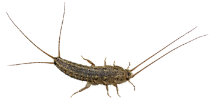
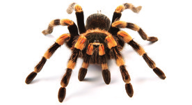
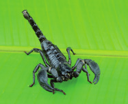
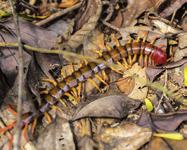

Indica las semejanzas y las diferencias que existen entre estas parejas de animales.
a. Ofiura y holoturia
b. Erizo de mar y estrella de mar
c. Almeja y caracol de huerta
d. Calamar y pulpo
¿Qué argumentos utilizarías para diferenciar un artrópodo de cualquier otro invertebrado?
El exoesqueleto de los artrópodos es un impedimento para el crecimiento. ¿Cómo evitan este obstáculo estos animales?
El cuerpo de los artrópodos está dividido en dos o en tres regiones, según el grupo del que se trate. Escribe el nombre de esas regiones y el grupo en el que se dan.
Busca el significado de la palabra artrópodo y explica a qué hace referencia.
¿Qué características externas te fijarías para diferenciar a este animal de un insecto?
El término langosta remite a dos artrópodos diferentes. ¿Cuáles son?
a. ¿Cuáles son?
b. Enumera las semejanzas y diferencias que existen entre ellos.
Argumenta el siguiente enunciado: «Los científicos afirman que los insectos son los artrópodos mejor adaptados».
¿Qué tienen en común un arácnido, un insecto, un crustáceo y un miriápodo?
Copia en tu cuaderno y relaciona cada grupo de insectos con el animal de la derecha.
Dermáptero
Díptero
Odonato
Ortóptero
Dictióptero
Lepidóptero
Hemíptero
Coleóptero
Himenóptero
Imágenes de invertebrados

Pez plateado

Tarántula

Escorpión sobre hoja verde

Ciempiés sobre el suelo del bosque